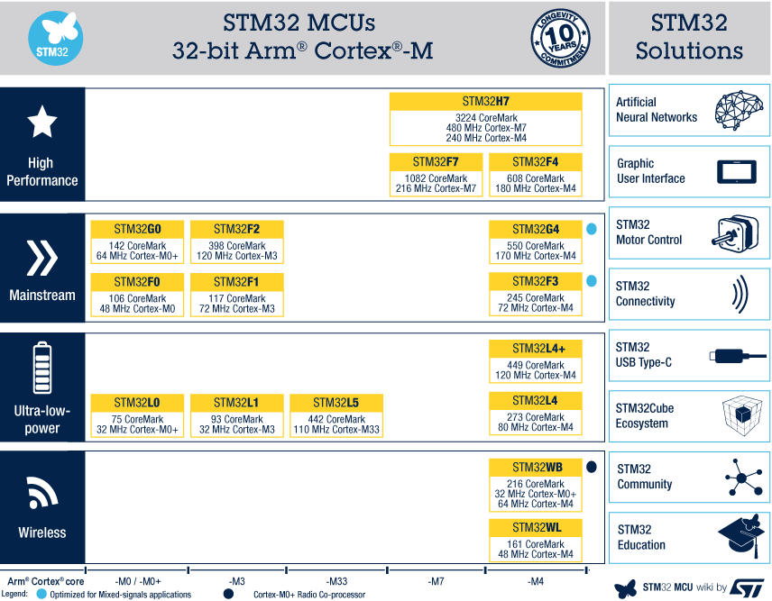
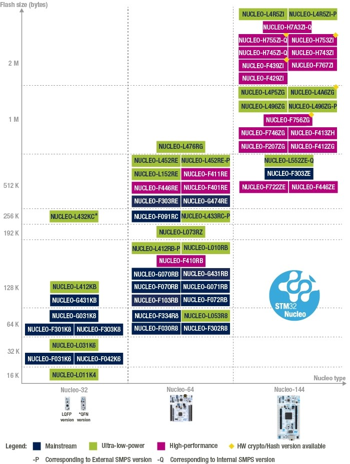
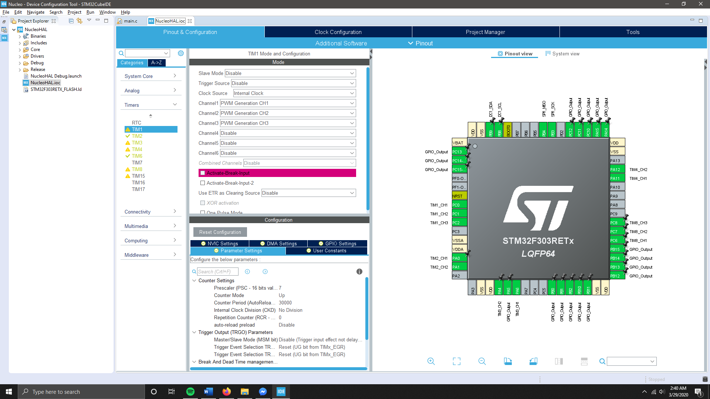
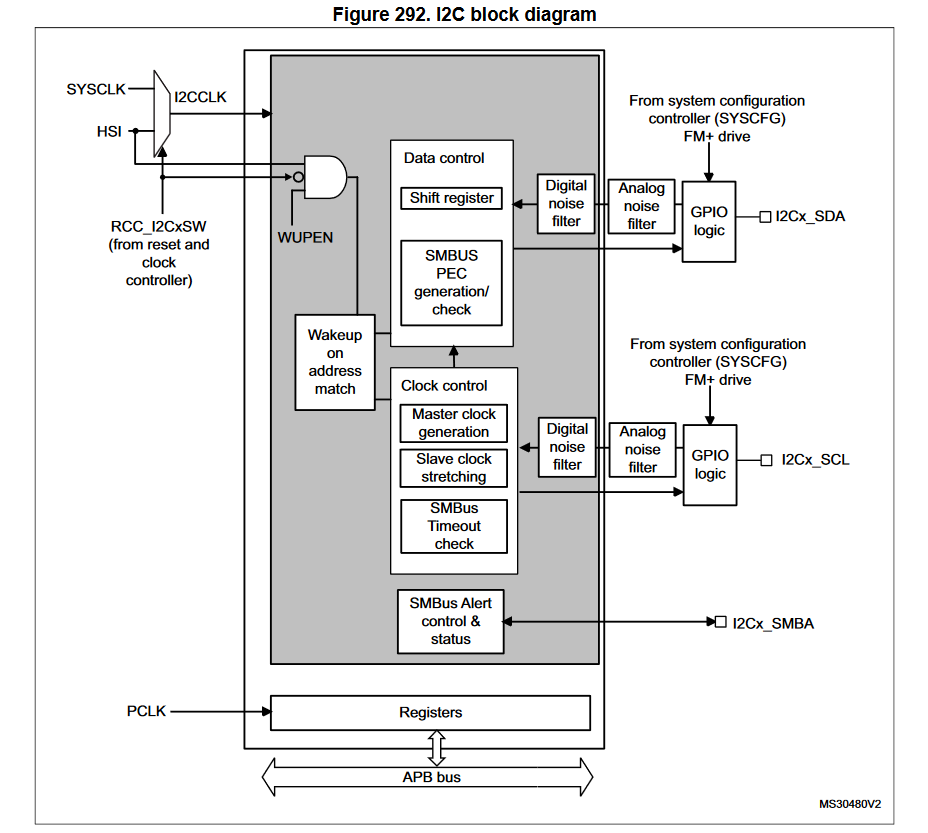

Nucleos Introduction
A “Nucleo” is a microcontroller evaluation board manufactured by STM32 to prototype with STM32’s MCUs. Nucleos come with a removable ST-Link debugger/programmer integrated on the board, allowing firmware flashing and extensive debugging options through a simple USB connection. STM32 MCU have a wide range of hardware capabilities, with dedicated internal circuitry for I2C, SPI, UART, timers, and more. Firmware is typically written in C/C++ using STM32’s extremely capable Hardware Abstraction Layer (HAL) libraries, and compiled in STM32’s Cube IDE.
MCU
STM32 microcontrollers are organized into various categories, as shown.  Each family of MCUs has dozens of models, each with a different feature set. The MCU’s are a realization of ARM’s Cortex M family of processors. Use the product selector on ST’s website to find MCU’s appropriate to your application.
Nucleo
STM32 Nucleos are evaluation boards available to prototype designs that employ STM32 MCUs. There are many models of Nucleos, named after the MCU installed, the physical form factor, and the flash memory size. All available Nucleo boards are shown below.  Nucleos are often cheap (~$10 for a Nucleo-F303RE). The board breaks out all the MCU’s available interfaces into header pins, while implementing most of the standard extraneous circuity (voltage regulators, oscillators, etc.) required by the MCU. Designed for prototyping/testing, Nucleos come with an ST-Link debugger/programmer module, which will automatically flash the MCU’s firmware and allows the Cube IDE to debug code mid-execution.
It is important to note that the essential component is the MCU itself - a Nucleo is just a helpful breakout board that ST has provided for select MCUs. Many topics discussed below, such as HAL/LL Libraries, interrupts, and interface peripherals, are elements of the MCU, not the Nucleo. A notable exception is the ST-Link programmer/debugger. This guide is very intentional with its use of the term "MCU" vs "Nucleo"
Cube IDE
ST’s Cube IDE is built off of the Eclipse IDE. Upon creating a new “STM32 Project”, the IDE will prompt the user to select a STM32 MCU. The IDE should automatically preload all relevant HAL libraries (discussed later) into the project workspace and generate the proper initialization code. A .ioc file is also generated, which when viewed in ST’s custom “Device Configuation Tool” perspective, allows the user to interactively control various features of the MCU. An example of this perspective is shown below. CubeIDE will use the settings specified in the .ioc file to automatically generate code for the STM32’s firmware.  STM32 processors typically use no operating system, and such behave much like an Arduino. At a basic level, their functionality is to run the main.c code that is flashed to their memory. Cube IDE will populate the main.c with the standard set of code necessary to get the MCU started. (RTOS is an option, but MRover firmware shouldn’t be complex enough to necessitate RTOS)
In reality, the STM32 MCU is flashed with a binary file containing machine code. CubeIDE uses g++ to compile C/C++ code, automatically passing g++ the appropriate instruction set (in this case, ARM Cortex instruction sets). ArduinoIDE does the same, using a C compiler to flash Arduinos with machine code. Developers typically never see the machine code, as the programming languages make a point of abstracting ISAs (instruction set architectures) away from the higher-level logic/structures programmers wish to deal with.
Changing the MCU configuration in the device configuration tool should ask the developer whether or not to “Generate Code?” Select yes, because this will prompt CubeIDE to regenerate the code necessary to set up the MCU as desired.
CubeIDE often uses HAL functions or rarely LL functions to accomplish this, and will clearly mark all the pregenerated code with comments.
STM32 Libraries
HAL stands for Hardware Abstraction Layer. It is a library written by ST, available from Cube IDE, that provides interface functions that will control the STM32 MCU’s hardware. By abstracting away the MCU model-specific details of hardware control, code using HAL functions should be easily ported between STM32 MCU’s within the same lineup. For example, the entire STM32F4 series of MCU’s are controlled using the same HAL library. HAL functions will do runtime checks for hardware faults. For example, if the I2C module of the MCU is locked in an inoperable state, the next I2C related HAL function will detect the issue.
LL (Low-level) APIs are also available. They are a fast, light-weight, closer-to-hardware layer that developers can use to control the MCU hardware. They are, however, meant for embedded system experts, and it recommended the MCU hardware be entirely controlled by HAL functions.
HAL and LL functions are documented thoroughly but shallowly. What this means is that the documentation definitely contains and explains every HAL/LL function that exists, but only brief, high-level explanations are provided. There is the assumption that STM32 developers understand coding principles such as callbacks and interrupts. There is also the expectation that STM32 developers are familiar with the interface peripherals they are controlling.
ST-Link
The USB connection on the Nucleo is actually a connection to the removable section of the board called the ST-Link. The ST-Link is able to flash firmware to the MCU, and control debugging related interface peripherals on the MCU. Removal of the ST-Link also removes the capability to do firmware flashing and live debugging through USB.
ST-Link's are also available as a seperate piece of hardware, if a developer desires the ST-Link flashing/debugging experience with STM32 MCUs that aren't embedded into a Nucleo.
ST has written the USB drivers for the ST-Link in a clever way. Upon connecting an ST-Link to a computer through USB, the ST-Link will appear as an external hard drive to the computer. The most basic way to flash an STM32 MCU with firmware is to copy the firmware compiled as a binary file into this “external hard drive”. The ST-Link will automatically flash the MCU with the binary, and the MCU begins executing the binary once complete.
A more streamlined way to flash code to the STM32 MCU is through CubeIDE. There is, of course, the standard “build” button that most C++ IDE’s have – responsible for compiling the main.c, main.h, other developer-written files, and necessary HAL functions into a single executable. CubeIDE also has a “debug” button, which will build the executable and also send it directly to the ST-Link connected to the computer at the moment.
Using this function will also connect the CubeIDE to all the ST-Link’s debugging functionalities. This way, the MCU is controllable through CubeIDE with standard debugging steps. This includes pausing at breakpoints, stepping forward, stepping in, stepping out, continuing, etc… Debugging a STM32 MCU with active interface peripherals is dangerous, however – there is a good chance that the interface peripheral will enter faulty states because the MCU is not operating with normal execution flows.
Note that there are two build options – debug and release. Debug builds are more helpful when debugging, and release builds are optimized for speed – up to several orders of magnitude faster.
It is helpful to, in CubeIDE, follow these steps: 1. Open "Properties" from the "Project" dropdown menu at the top of the screen. 2. Open "C/C++ Build" > "Settings" from the lefthand navigation menu. 3. Select "Debug" for the Configuration option 4. Select the "Tool Settings" tab. 5. Select "MCU Post build outputs" from the lefthand navigation menu 6. Check the "Convert to binary file" option 7. Select "Release" for the Configuration option 8. Repeat steps 4-6
This will ensure CubeIDE always generates a single machine code binary for developer use within the project directory whenever the project is built. They will be located in the "Debug" or "Release" folders, depending on which type of build is used. The .bin file is a complete copy of the firmware for the STM32 MCU - it can be moved, saved, shared, as any normal file, as well as copied into the ST-Link's pretend "External Drive" to flash the STM32 MCU, independent of CubeIDE.
Callbacks and Interrupts
An interrupt is a signal that interrupts the natural flow of a program. This is typically done at a processor level, so interrupts can cause breakaways from practically anywhere in the code. When interrupts trigger, they force the processor to execute a separate segment of code. Only when that segment finishes, does the processor return to where it left off with the original program.
HAL functions accomplish a lot of their functionality through callback functions. Callback functions are functions that are “to be called back later”. Interrupts generated by interface peripherals will typically call a callback function, pausing the main execution flow of the program to handle the event generated by the interrupt.
For example, if a hardware counter unit on the STM32 MCU is configured to be a timer that generates an interrupt every second – every second, the hardware counter unit will signal to the processor to stop what it’s doing (perhaps the processor is just waiting in a “while true” loop). The processor will enter the callback function labeled HAL_TIM_Callback(), expecting this function has been written to handle what should happen when this timer gives it’s signal. Once that callback function finishes, the processor returns to its “while true” loop.
Callback functions are “weakly” defined by the HAL – as soon as the developer redefines the function, the HAL callback function (which is just a placeholder and is functionally empty) is overwritten. This simple method of redefining HAL callback functions is an easy way for developers to write code that responds to events generated by the MCU’s interface peripherals.
The HAL documentation lists all the callback functions that can be overwritten.
Interface Peripherals
Interface peripherals refer broadly to the interfaces onboard the STM32 MCU. These are often implemented in hardware, not software. For example, below is a block diagram for the I2C interface on almost all STM32 F3 series MCU’s.  Hardware implemented interfaces have a number of advantages * They don't require processor cycles to operate * They use system clocks and their own state registers, isolating their performance from the rest of the MCU * They only trigger interrupts when meaningful events happen
Controlling hardware interface peripherals typically involves writing to and reading from control registers. HAL/LL functions take care of this, abstracting the hardware away from the interfacing. Most interface peripherals can be controlled entirely through HAL functions, though the control registers can be read/written by a developer if necessary.